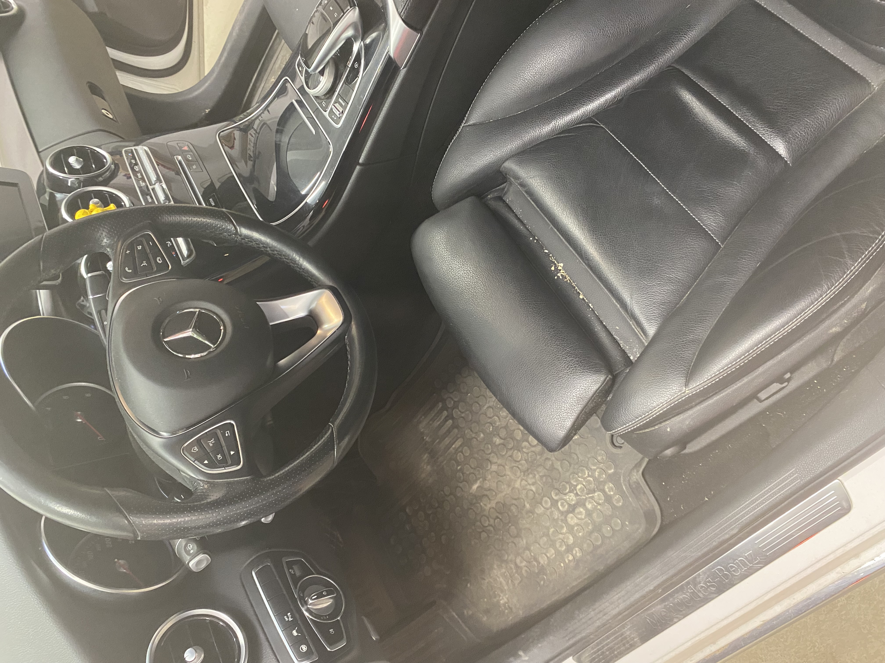

GALÉRIA
Éld át az átalakulást! - előtte-utána képek munkáinkról
BELSŐ TISZTÍTÁSOK
A csúszka mozgatásával válthatsz az előtte-utána képek között
‹
›
Seat Ibiza
Teljes külső-belső kozmetika, kárpittisztítás


‹
›
Mercedes-Benz C Class
Teljes külső-belső kozmetika, bőrápolás
‹
›
BME 730d E65
Teljes külső-belső kozmetika, bőrápolás


‹
›
Renault Fluence
Teljes külső-belső kozmetika, kárpittisztítás


‹
›
Mercedes-Benz GLE Coupe
Alap külső-belső tisztítás


‹
›
BMW 320d E46
Alap külső-belső tisztítás
POLÍROZÁS
‹
›
2002 Mercedes-Benz ML
Korrekciós polírozás 3 lépcsőben

‹
›
2018 Skoda Octavia
Korrekciós polírozás és kemény waxolás

‹
›
2018 Skoda Octavia
Ablakok közti műanyag elemek polírozása

Kárpittisztítás
Csomagtér teljes kárpittisztítása után készített csíkos díszítés

Munkás autó tisztítás
Munkás autó tisztítása a legmacerásabb helyeken is

Motortér tisztítás
Biztonságos és alapos motortér tiszttás